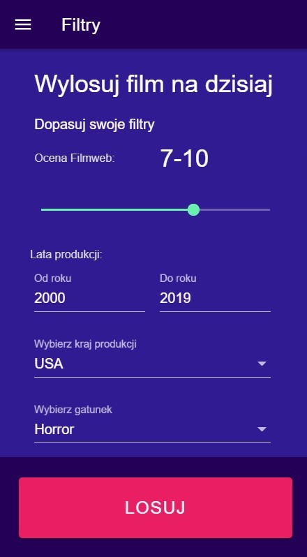
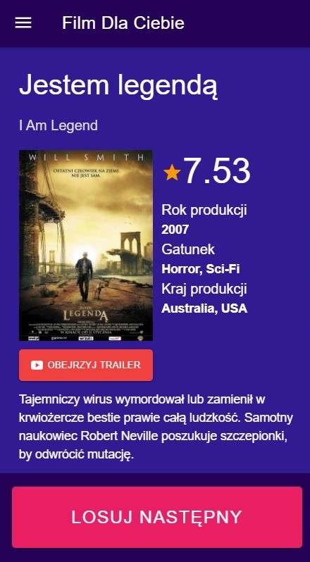
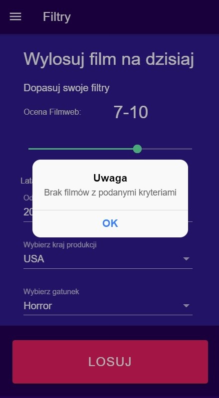
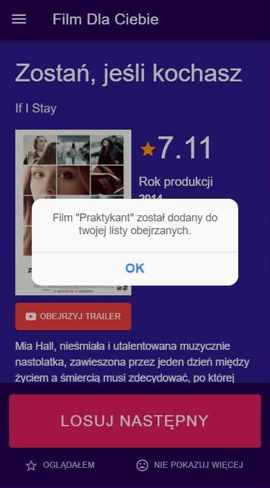
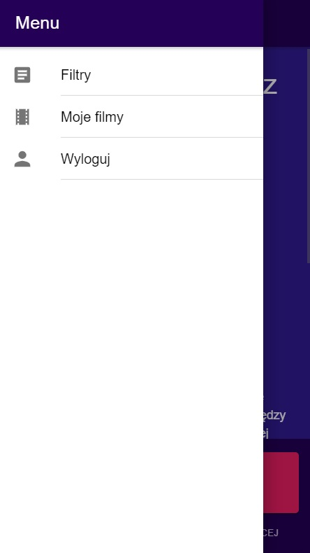
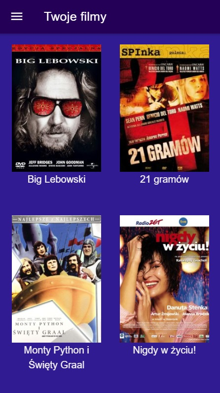

Instrukcja obsługi
Logowanie zgodnie z wymaganiami projektowymi możliwe jest na kilka sposobów, zależnie od wyboru dokonanego
przez użytkownika.
Do wyboru są:
-
Rejestracja i logowanie bezpośrednio z bazy aplikacji
-
Logowanie poprzez Google
-
Logowanie przez Facebook
-
Pominięcie logowania i korzystanie z ograniczonej wersji aplikacji
Należy wybrać jeden z wymienionych powyżej sposobów i ukończyć proces rejestracji/logowania
Po poprawnym zalogowaniu (uruchomieniu) aplikacja FDC jest już dostępna. Użytkownik dostaje w niej możliwość
wyboru filmu zgodnie ze swoimi preferencjami, dostosowując filtry:

Losowanie filmu odbywa się przy pomocy przycisku "Losuj"
Jeśli w bazie znajduje się film odpowiadający kryteriom użytkownika, to zostanie on przedstawiony....:

.... lub nie:

Strona z wylosowanym filmem umożliwia lepsze poznanie wylosowanego produkcji, przedstawiając użytkownikowi
podstawowe informacje, ocenę Filmweb oraz daje możliwość obejrzenia traileru:
Ponadto aplikacja daje możliwość podjęcia decyzji użytkownikowi - czy oglądał film, lub czy nie chce oglądać
już go w wynikach wyszukiwania:

Jeśli użytkownik zdecyduje się jednak poszukać kolejnego filmu z tymi samymi kryteriami to ma możliwość użycia
przycisku "LOSUJ NASTĘPNY" lub popularnego "potrząśnięcia" telefonem w tym samym celu
Zalogowany użytkownik ma również możliwość skorzystania z menu zawierającego trzy opcje:
-
Filtry - ponowne przejście do strony z filtrami wyszukiwania
-
Moje filmy - opcja dostępna tylko dla zalogowanych użytkowników
-
Wyloguj

Moje filmy:
